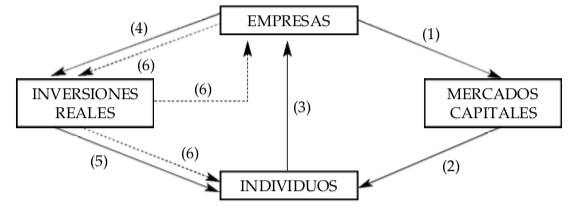

Economía financiera
2023-02-11
1 Introducción a la Economía Financiera
Se puede enterder la Economía Financiera como el estudio del comportamiento de los individuos en la asignación intertemporal de sus recursos en un entorno incierto, así como el estudio del papel de las organizaciones económicas y los mercados institucionalizados en facilitar duchas asignaciones.
En la Economía Financiera debemos destacar dos aspectos que condicionarán nuestro estudio:
- la asignación intertemporal de los recursos
- el entorno incierto
De esta forma, el estudioso habitual de la Economía Financiera impone determinadas formas de comportamiento de los individuos que nos permiten entender cómo se enfrentan al contexto intertemporal en sus decisiones de inversión.
También nos centraremos en precisar lo que entendemos por riesgo, las formas que tenemos de medirlo, las alternativas disponibles para realizar coberturas del mismo y en discutir su valoración por parte de los agentes económicos.
Las organizaciones económicas, en el contexto que nos ocupa, se pueden caracterizar como miembros de dos grupos alternativos:
empresas, que poseen como activos los medios físicos de producción para la economía y que emiten activos financieros para financiar sus actividades de producción;y los
intermediarios financieros, que son poseedores y emisores de activos financieros, invirtiendo, por lo tanto, solamente de forma indirecta en activos físicos o reales.
Los mercados donde individuos e intermediarios intercambian dichos activos financieros reciben el genérico nombre de mercado de capitales.
1.1 Distinción de la Economía Financiera de otras áreas de especialidad.
Son precisamente los mercados de capitales el principal foco de atención de la Economía Financiera.
De hecho, ésta es la primera y obvia forma de distinguir dicha materia de entre las diversas áreas de especialidad de un campo más amplio como es la Teoría Económica o la economía en general.
1.2 Estrategias de Arbitraje
Cualquier estrategia de inversión que permita ganar dinero a cambio de nada es una estrategia de arbitraje. En lenguaje más coloquial nos podemos referir a estas estrategias como maquinas de hacer dinero.
¿Cómo podemos describir de manera más formal una oportunidad de arbitraje? para que no exista la posibilidad de realizar una estrategia de arbitraje deber ser cierto que si un activo financiero o una combinación de activos, cartera produce pagos futuros no negativos, entonces, necesariamente, el costo de dicho activo o cartera en el momento de realizar la inversión debe ser también no negativo.
El primer supuesto con el que trabajaremos a lo largo de este libro y que consideramos un supuesto básico y fundamental, las estrategias de arbitraje no existen de forma sistemática. Esto es, si en algún momento determinado existe la posibilidad de realiar algún arbitraje, el propio funcionamiento altamente competitivo de los mercados de capitales hace que dicha oportunidad desaparezca con enorme rapidez. Así, introduciremos actitudes explícitas hacia el riesgo de forma que nos veremos obligados a imponer supuestos adicionales sobre las preferencias individuales que nos permiten agregar el comportamiento individual y discutir la concepción del equilibrio en los mercados de capitales.
Tres de los economistas que recibieron con anterioridad el Premio Nobel, Keneth Arrow, Gerard Debreu y Franco Modigliani lo obtuvieron en gran medida, por sentar las bases de lo que actualmente entendemos por Economia Financiera.**
Desde la perspectiva de ausencia de arbitraje se procede a valorar activos tomando como referencia los precios de otros activos. Desde la perspectiva del equilibrio se busca la determinación simultánea de todos ellos y se observa cómo variabldes agregadas influyen en la determinación del precio de cada activo.
1.3 El comportamiento Individual y la Teoría Económica
El punto natural de desarrollo de la Economía Financiera es derivar y comprender el comportamiento inversor de los individuos o, si se quiere, de los agentes económicos.
Resulta conveniente dividir la desición de inversión por parte de los individuos en dos componentes:
La desición de
consumo - ahorro, en el cual los individuos deciden la cantidad óptima de su riqueza actual que debe asignarse a consumo presente y la cantidad que debe destinarse a inversión para poder así consumir en el futuro, yLa
selección de carteras, en la que el individuo decide cómo colocar sus ahorros entre las diversas alternativas que ofrece el conjunto de oportunidades de inversión.
Actualmente, en Economía Financiera, resulta habitual suponer que el orden de preferencias satisface los axiomas de la utilidad esperada de Von Neumann-Morgenstern.
En definitiva, la base de nuestra materia radica precisamente en la maximización de la utilidad esperada por parte de los individuos a la hora de llevar a cabo sus decisiones de inversión fundamentándose, de esta forma, en las raíces de la Teoría Economica.
1.4 El campo de actuación y los problemas básicos de la Economía Financiera.
Los mercados de capitales organizados y suficientemente activos hacen que los precios resultantes que, sin duda, todos los agentes podemos observar, reflejen en forma conjunta la información disponible y las expectativas de la gran variedad de participantes en los mercados. Precisamente por este motivo, resulta tremendamente difícil llevar a cabo estrategias de arbitraje.
Las diferencias en los tipos de interés que ofrecen las obligaciones emitidas por distintas empresas contienen información sobre las posibilidades de quiebra de las mismas.
Todo lo anterior nos lleva a plantear uno de los problemas fundamentales de la Economía Financiera y que, de hecho, es uno de los tres principales campos de actuación de la materia que vamos a comentar a lo largo de los próximos capítulos.
- La Economía Financiera debe aprender a revelar consistentemente predicciones económicas mediante la observación de los precios de los activos financieros que surgen de mercados competitivos.
Finalmente, dentro de este primer gran campo de actuación de la Economía Financiera como es la determinación de los precios de los activos financieros, debemos señalar que, especialmente en la última década, han sido creados importantes bancos de datos financieros con los que los modelos teóricos anteriores han podido ser expuestos a sofisticados contrastes empíricos, creando incluso un propio campo de estudio que comienza a denominarse Econometría Financiera.
Un segundo problema concerniente a la Economía Financiera, tal como se daba a entender en la primera sección de este capítulo, el
la eficiente organización y regulación de los intermediarios financieros y de los mercados de contratación de activos financieros. Debemos tener en cuenta que dichas instituciones realizan tres tipos de funciones básicas:- Asignación de la riqueza de los individuos.
- Asignación de recursos de las empresas.
- Fuente de información
1.4.1 Opción de Compra
En general, una opción de compra otorga el derecho, no la obligación, a comprar un número determinado de acciones a un precio establecido denomidado precio de ejercicio. Si el valor de esas acciones en una fecha futura, previamente determinada, es superior al precio de ejercicio, el titular de la opción ejercera su derecho. Así, el valor de esa opción en el momento de su vencimiento será:
\[ c_T = \max{(0, P_{T-K})} \],
donde,
- \(c_T\) es el valor de la opción de compra,
- \(P_T\) es el valor de la acción en el momento de su vencimiento y \(K\) es el precio de ejercicio.
Ahora bien, supongamos que una empresa tiene una determinada cantidad de deuda con valor nominal igual a \(D\) y unos recursos propios cuyos propietarios reciben el valor residual una vez compensados los inversores en recursos ajenos. Al vencimiento de la deuda, si \(X\), la cantidad de recursos generados por los activos reales de la empresa, es suficientemente elevada, los accionistas recibirán \(X - D\); en caso contrario no percibirán absolutamente nada pero, dado que existe la responsabilidad limitada, tampoco se verán obligados a poner dinero de su propio bolsillo para compensar en su totalidad a los acreedores. En difinitiva dichos accionistas tienen un pago final al vencimiento de la deuda igual a
\[P_T = \max{(0, X-D)}\]
Si pensamos en términos de opciones, es evidente que dicha estructura de pagos finales corresponde a una opción de compra sobre los activos de la empresa, siendo \(D\) el precio de ejercicio.
En definitiva, los campos de actuación de la Economía Financiera comprenden el estudio de:
LA DETERMINACIÓN E INTERPRETACIÓN DE LOS PRECIOS DE LOS ACTIVOS FINANCIEROS Y VALORACIÓN DEL RIESGO (modelos de valoración de activos financieros, activos derivados, eficiencia informacional e información asimétrica.)
LA EFICIENCIA ORGANIZACIÓN DE LA INTERMEDIACIÓN FINANCIERA Y DE LOS MERCADOS DE CAPITALES (teoría de la intermediación y economía bancaria,regulación, teoría de la microestructura e ingeniería e innovación financiera).
LA EFICIENCIA TOMA DE DESICIONES POR PARTE DE LA EMPRESA (modelos de desiciones óptimas de inversión, organización y empresarial, modelos de agencia e incentivos)
1.5 Valoración y Economía Financiera
Hemos comentado en diversos párrafos a lo largo de las líneas anteriores que la valoración de activos es uno de los problemas básicos de la Economía Financiera y sobre el cual centraremos la mayor parte de los capítulos de este libro. Ahora bien, ¿qué entendemos por valoración de activo?. Para dar una primera respuesta a esta pregunta resulta conveniente clasificar las decisiones de inversión que llevan a cabo los individuos en
inversiones realesyinversiones financieras- Por inversiones reales entendemos la creación de un activo físico de larga duración.
- Por el contrario, las inversiones financieras se producen cuando se adquiere un derecho sobre una inversión real ya existente.
En este libro nos centraremos principalmente en las inversiones financieras, aunque dedicaremos algún comentario a las inversiones reales.
1.5.1 Modelos de valoración de activos
Nos dicen cuanto valen hoy los derechos adquiridos sobre los recursos futuros que generan las inversiones reales asociadas a dichas inversiones financieras, ajustando dicho valor por el riesgo que conlleva la inversión y el tiempo que dicha inversión tardará en recuperarse.
Resulta útil esquematizar estas ideas en un proceso secuencial, tal como aparece en la figura:

En (1), las empresas emiten activos financieros haciendo uso de los mercados de capitales. Los individuos compran estos activos, apropiándose así de los derechos sobre los recursos que generan las inversiones reales que realicen las empresas.
Esta compra se identifica por (2).
Las empresas reciben el dinero en (3) y lleva a cabo sus inversiones reales en (4).
Finalmente, los individuos obtienen los recursos generados por dichas inversiones en (5). Nótese que las empresas pueden reinvertir parte o incluso la totalidad de los recursos generados siempre que dicha desición maximice la riqueza del accionista, que es en definitiv
a, el objetivo último que debe buscar la empresa. Está posible reinversión se representa por (6).
Los modelos de valoración no son más que un resumen de las diversas secuencias que aparecen en la figura anterior.
1.6 Pilares Fundamentales de la Economía Financiera: Arbitraje y Equilibrio
La valoración del riesgo surge de las siguientes dos técnicas:
Técnicas de ausencia de arbitraje, basadas en replicar los pagos futuros de los activos que queremos valorar mediante combinaciones de otros activos ya existentes.Técnicas de equilibrio, descansan en el análisis de demanda y oferta, comportamiento optimizador de los agentes economicos.
El gran éxito que han tenido las técnicas de ausencia de arbitraje se debe principalmente a:
Los escasos supuestos que resultan necesarios para alcanzar predicciones sobre el comportamiento de los precios, en especial nos permite trabajar con supuestos muy básicos sobres las preferencias de los inversores.
Conducen a reglas de valoración y cobertura explicitas, lo cual tiene implicaciones muy relevantes para la asignación de los recursos en un entorno de incertidumbre.
Con el segundo enfoque, se debe señalar que a pesar de tener ventajas importantes en mercados y contextos donde las fricciones institucionales son relevantes, es necesario adoptar supuestos especializados sobre la naturaleza de las preferencias de los individuos o sobre los procesos estocásticos de las variables económicas claves.
Un mercado financiero no podría ser eficiente desde un punto de vista informativo si existiese la posibilidad de arbitraje. Asimismo, la ausencia de arbitraje produce reglas lineales de valoración de activos que conducen a modelos sobre la relación explícita entrw el rendimiento esperado y riesgo.
Así, el modelo más conocido de valoración de activos financieros el CAPM se basa de hecho, en una relación lineal entre el rendimiento esperado y riesgo. El conocido modelo de estructura de capital de Modigliani y Miller no es más que la aplicación directa de la ausencia de arbitraje al análisis de las decisiones empresariales financieras óptimas.
En resumen, la ausencia de arbitraje como hipótesis de trabajo convierte a la Economía Financiera en una materia con naturaleza propia, proporcionándole además una potentísima herramienta de trabajo que ha tenido y tendrá consecuencias muy importantes para el estudio de la economía en general.
1.7 La ecuación fundamental de valoración como integradora de la Economía Financiera.
Esta ecuación establece que el precio de cualquier activo financiero tiene la forma:
\[P_j = E[(FD)(X_j)]\]
donde \(E\) es el operador de expectativas, \(FD\) es algún factor de descuento y \(X_j\) los pagos futuros del activo \(j\). Así, la ausencia de arbitraje garantiza que dicho factor de descuento existe y es positivo. Si, además, el mercado es completo, dicho factor de descuento es único. En el contexto de valoración bajo ausencia de arbitraje, el factor de descuento se asocia a nombres alternativos como factor de descuento estocástico, precio de los activos Arrow-Debreu, probabilidad neutral al riesgo o medida equivalente de martingala y derivada de Radon-Nikodym.
Si queremos ser más precisos sobre el factor de descuento, incorporamos argumentos de equilibrio para demostrar que, en este caso, el factor de descuento es la relación marginal de sustitución intertemporal del consumo agregado